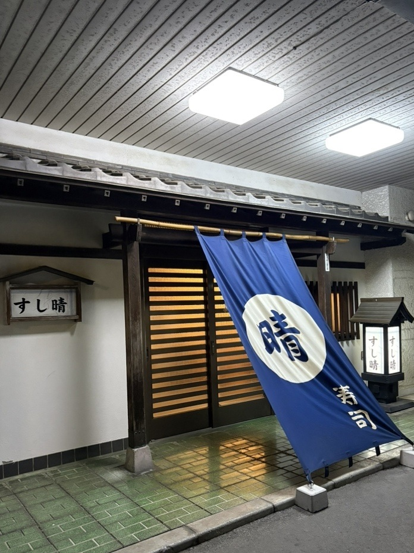
ある日の、三十四品。
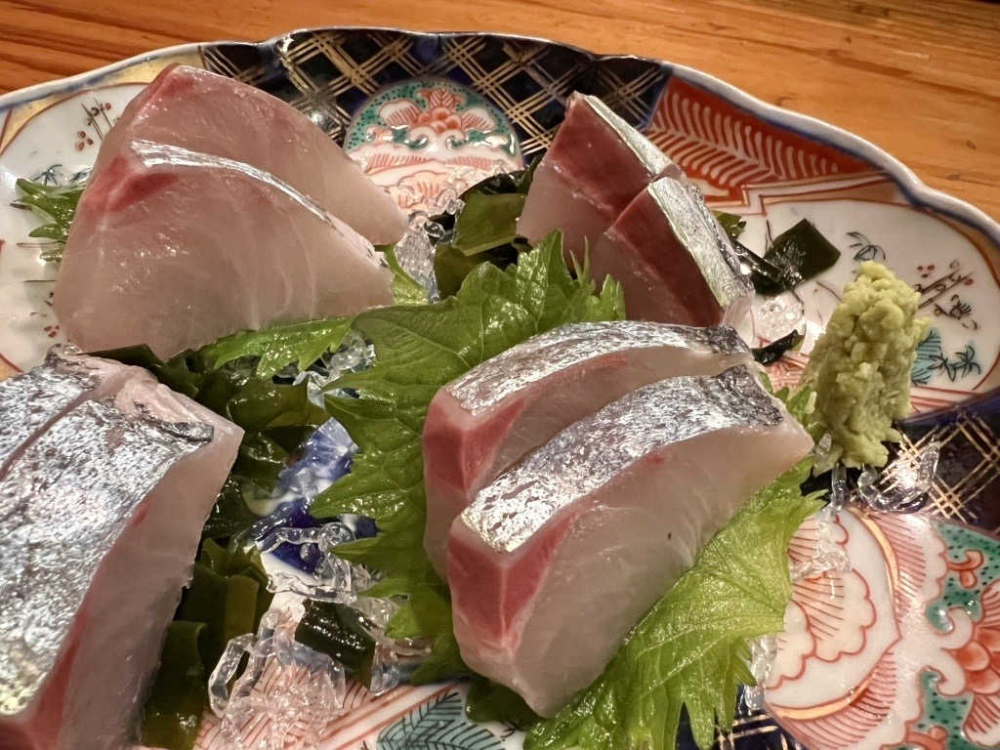
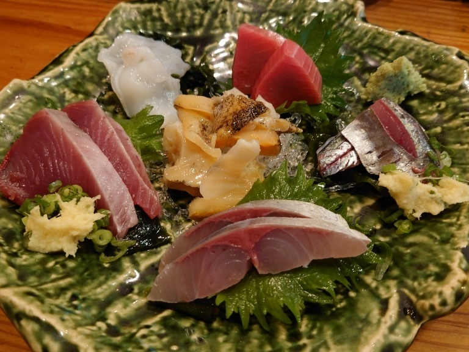
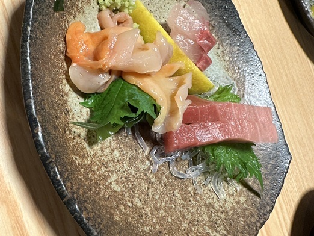
お造りは、その日の魚を黒板に書き出し、そこからお選びいただきます。まずは一杯と、お造りを何か一つお申しつけください。
焼き物に、陶板の酒蒸し、酢の物や和え物。寿司屋の仕込みからこしらえる一品を、日替わりでご用意しております。にぎりの前に、お酒とご一緒にゆっくりお楽しみください。
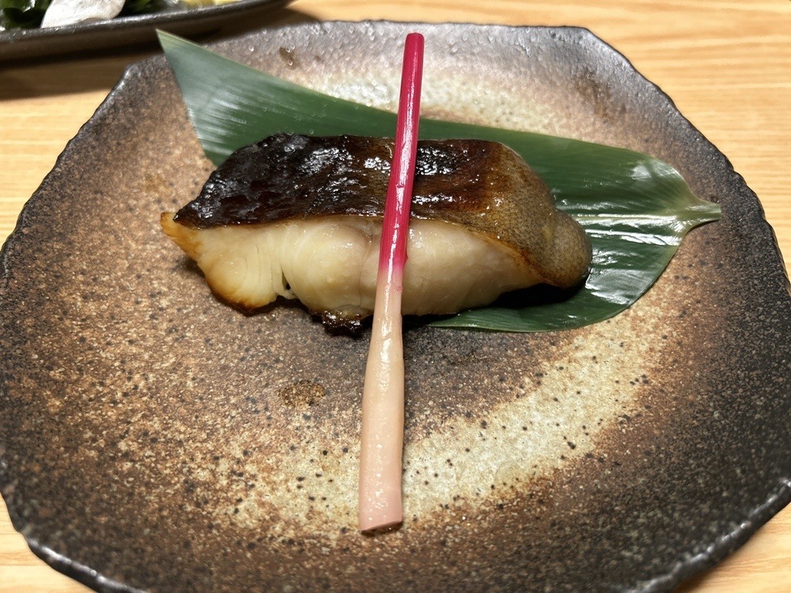
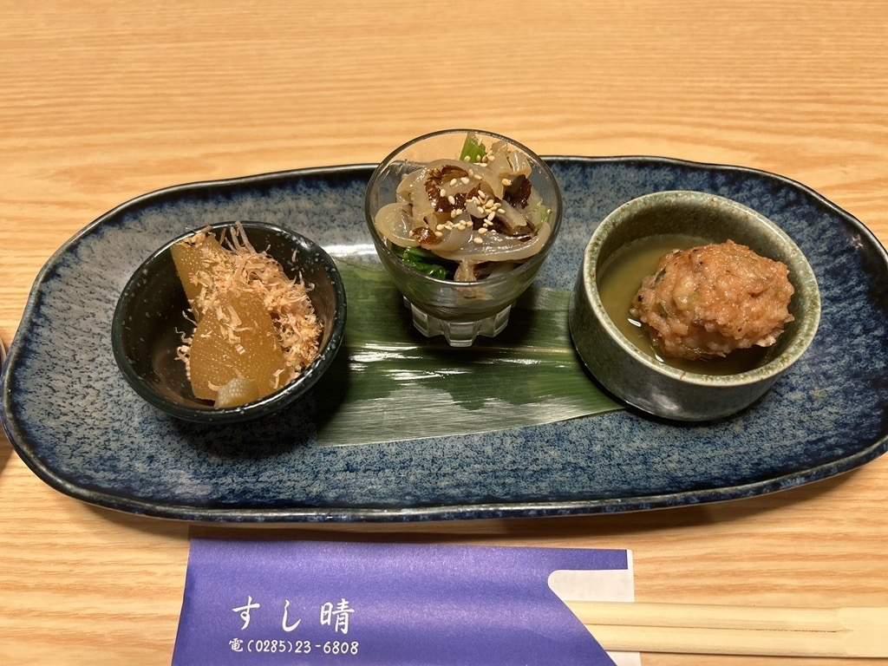
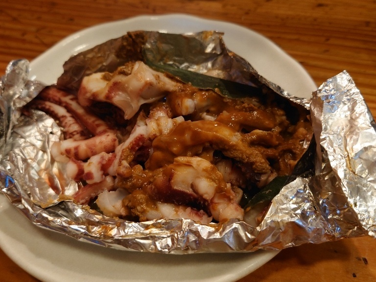
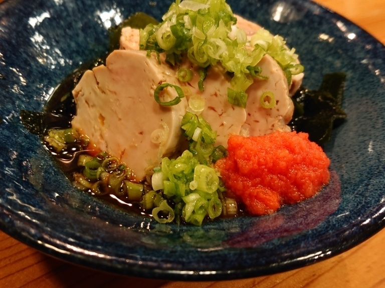
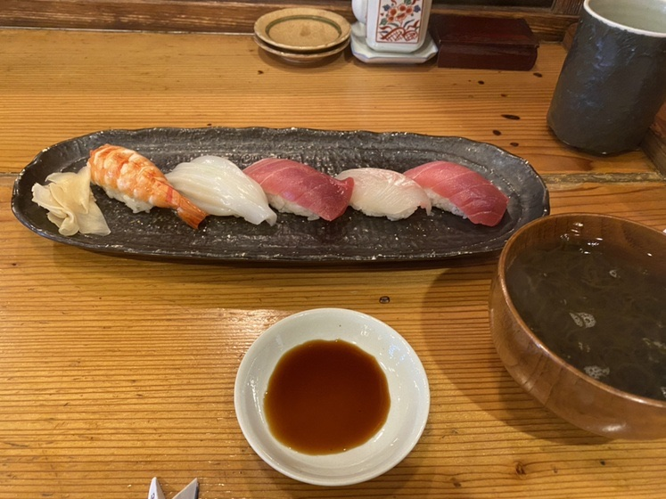
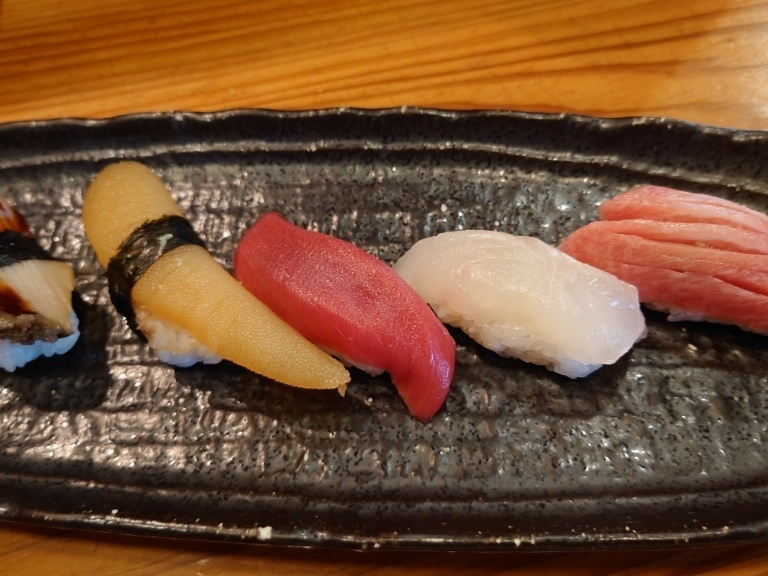
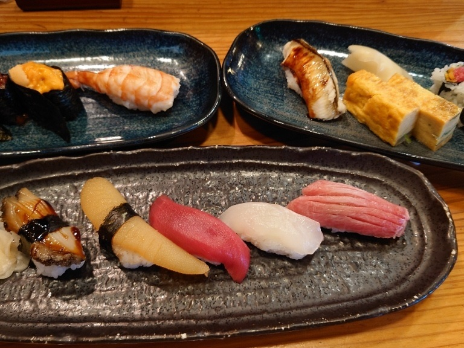
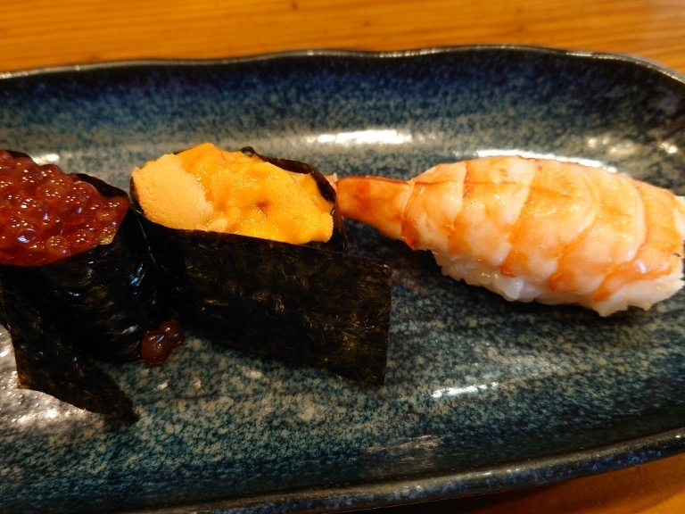
高砂は、中トロ、赤身、白身、いか、ほたて、玉子、いくらの七貫に、巻物を一本。末広は、いかのかわりに大えびが入ります。特撰おまかせは、大トロ、中トロ、白身、貝、数の子、うに、いくら、大えび、穴子、具入りの玉子の十貫に巻物を半本、茶碗蒸しをお付けします。飲んでつまんだあと、最後の一皿にどうぞ。
カウンターのほかに、テーブル席と、奥に小上がりをご用意しております。お一人ならカウンターへ、ご家族やお仲間とは小上がりへ。カウンターでは、その日のおすすめを直接お尋ねください。
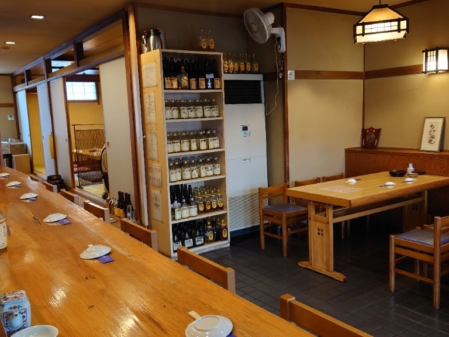
ご予約で席が埋まる日もございますので、お電話でご予約いただけますと確実です。
お支払いは現金のみ承っております。クレジットカード・電子マネー・QRコード決済はご利用いただけません。
駐車場がございますので、お車でもお越しいただけます。
| 営業時間 | 17:00〜22:00 |
|---|---|
| 定休日 | 火曜日・水曜日 |
「黒板の日替わりツマミメニューが豊富で嬉しくなりますね。」
お客様の声より（2024年7月）
「つまみも多く、飲んでつまんで〆られていいお店。」
お客様の声より（2025年9月）
「コリコリの歯応えで、鮮度がいいカンパチのお刺身でした。特選にぎりも、ネタが大きく、シャリとの相性もバッチリでした。」
お客様の声より（2025年11月）
JR小山駅の東口から歩いてお越しいただけます。バス停「天神町」からすぐです。紺ののれんと行灯が目印です。
| 住所 | 〒323-0032 栃木県小山市天神町1-4-25 |
|---|---|
| 電話 | 0285-23-6808 |
| アクセス | JR小山駅 東口から徒歩12分／バス停「天神町」から徒歩1分 |
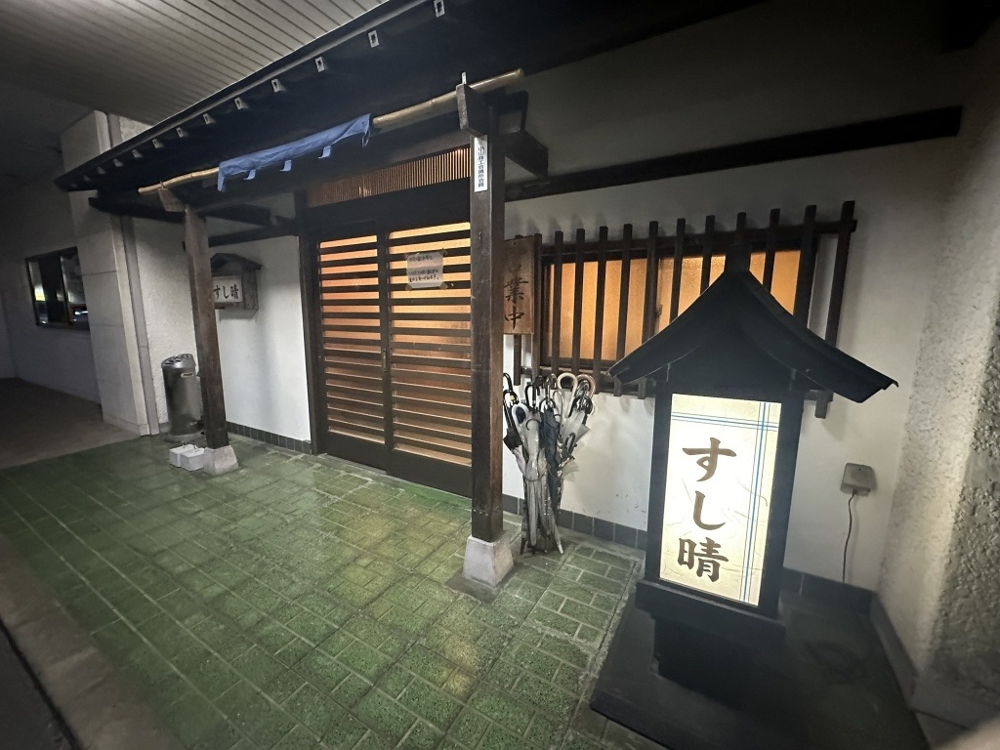